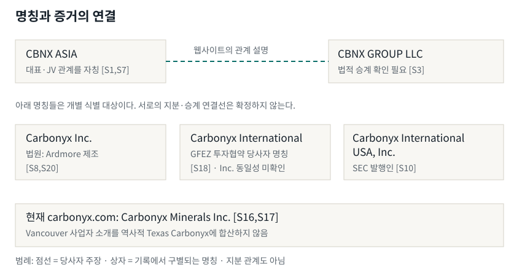
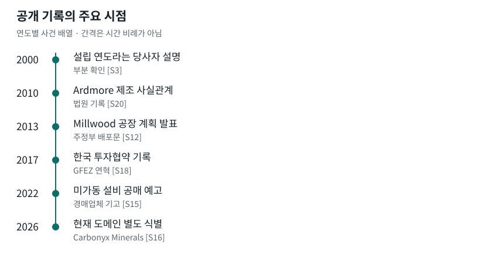

공개자료 실사 보고서 · 기준일 2026-10-04
CBNX와 Carbonyx
관계와 사업 이력
공개적인 사업 연계 설명은 확인된다.
법적 승계와 계약 범위는 확정되지 않는다.
CBNX ASIA는 현재 미국 CBNX GROUP의 아시아 독점 대표라고 소개하며, 과거 페이지에서는 Carbonyx의 아시아 JV 파트너라는 표현을 사용했다. 이는 당사자가 공개한 관계 설명의 존재를 확인하는 근거다. 독점권의 범위, 계약 기간, 지분 및 합작법인의 실재를 입증하는 계약서는 확보되지 않았다. [S1][S3][S7]
역사적 Carbonyx의 제조 활동과 한국 투자협의에는 법원 및 정부 기록이 있다. 그러나 이 기록이 오늘의 CBNX GROUP LLC에 대한 소유권이나 자산 승계를 보증하지 않는다. Carbonyx Inc., Carbonyx International Inc., Carbonyx International USA, Inc.를 하나의 법인으로 합치면 안 된다. [S8][S10][S18][S20]
의사결정에 필요한 판정
| 쟁점 | 현재 판정 |
|---|---|
| 아시아 대표·JV 관계 | 공개 주장 확인. 계약상 권리와 지분은 미확인. [S1][S7] |
| CBNX의 법적 후신 여부 | 웹사이트의 전신 설명은 있으나 법인 변경·자산 양도 연결은 미확인. [S3][S13] |
| 과거 제조와 한국 활동 | Ardmore 제조 사실관계와 GFEZ 투자협약 기록이 존재. [S18][S20] |
| Millwood 사업 결과 | 정부 계획 발표와 경매업체의 미가동 설비 설명을 구분해야 함. [S12][S15] |
| 현재 carbonyx.com | Carbonyx Minerals 소개를 역사적 Texas 사업에 합산하지 않음. [S16][S17] |
읽는 법: ‘확인’은 해당 문서가 명시하는 범위만 뜻한다. ‘부분 확인’은 당사자 설명 또는 간접 단서의 존재를 뜻하며, ‘미확인’은 사실 부정이 아니라 근거 부족을 뜻한다.
식별과 관계
명칭을 분리해야 관계가 보인다

CBNX ASIA와 CBNX GROUP
현행 CBNX ASIA 소개는 배승호를 CBNX ASIA CEO로, Siddhartha Gaur를 CBNX GROUP CEO로 표시한다. 그룹 소개는 CBNX GROUP LLC를 과거 Carbonyx International Inc.라고 설명한다. 같은 도메인에 있는 여러 페이지는 독립적인 교차 검증 자료로 세지 않았다. [S1][S3]
동일 인물과 유사 명칭의 한계
법원 의견의 Carbonyx Inc.와 SEC의 Carbonyx International USA, Inc.에 Siddhartha Gaur라는 인물이 등장한다. 이는 연계 조사의 단서지만 동일 법인, 모자회사 또는 후신 관계를 확정하는 증거는 아니다. GFEZ에 기재된 Carbonyx International 역시 별도의 식별 대상이다. [S8][S10][S18]
도메인은 시점을 붙여 읽는다
과거 carbonyx.com 아카이브는 CASP·Cokonyx와 Texas·Ardmore 사업을 소개했다. 현재 동일 도메인은 Vancouver의 Carbonyx Minerals Inc.를 소개하며 UBC 벤처 프로필에도 이 명칭이 나타난다. 도메인 문자열만 같다는 이유로 과거 기술·프로젝트를 현재 사업자의 실적으로 옮기지 않았다. [S5][S16][S17]
시계열
설립 설명에서 현재 도메인까지
| 시점 | 공개 기록 | 근거의 범위 |
|---|---|---|
| 2000 | Siddhartha Gaur가 Carbonyx를 설립했다는 그룹 소개. | 부분: 당사자 연혁 [S3] |
| 2010 | Ardmore에서 Cokonyx 제조가 이루어졌다는 법원 사실관계. | 확인: 역사적 활동 [S20] |
| 2011-02-02 | Carbonyx International USA, Inc.의 Form D. 발행인이 Delaware 설립 연도를 2010년으로 기재. | 확인: 제출 내용 [S10] |
| 2013-11-21 | WV Commerce 배포문이 Millwood 공장 계획을 발표. | 확인: 계획 발표 [S12] |
| 2014 / FY2015 | 주 의회 기록과 예산 문서에 Carbonyx 투자가 등장. 최초 발표일로 쓰지 않음. | 확인: 정부 기록 [S2][S11] |
| 2017-04-24 | GFEZ 연혁에 Carbonyx International 투자협약. | 확인: 투자 활동 [S18] |
| 2019-01-31 | 과거 carbonyx.com 아카이브에서 CASP·Cokonyx와 Plano·Ardmore 소개. | 부분: 회사 설명 [S5] |
| 2021-06 / 08 | Carbonyx Inc. 파산 사건 제출문서와 계획 확인명령 복제문. | 확인 범위 제한 [S6][S13] |
| 2022-06 / 07 | 경매업체 기고와 업계 기사가 Millwood 미가동·공매를 서술. | 부분: 날짜 상충 [S14][S15] |
| 2024-03-19 | CBNX ASIA가 Carbonyx의 아시아 JV 파트너라는 아카이브. | 확인: 당시 주장 [S7][S19] |
| 2026-10-04 | CBNX의 현행 관계 설명과 Carbonyx Minerals의 현행 도메인을 구별해 열람. | 확인: 관찰 시점 [S1][S16] |

주제별 근거와 상충
실제 활동과 홍보를 구분한다
Ardmore 제조는 역사적 근거가 있다
Oklahoma 연방법원 의견은 Ardmore 시설과 Cokonyx 제조공정을 다루며 과거 제조 활동을 뒷받침한다. 이는 사업에 제조 실체가 전혀 없었다는 해석을 지지하지 않는다. 다만 해당 시점과 장소의 사실관계를 현재 CBNX의 생산능력, 계약 실적 또는 특허 권리로 확장할 수는 없다. [S9][S20]
투자협약은 확인, 소유는 미확인
GFEZ 정부 연혁의 투자협약은 CBNX ASIA 활동 소개에 나타나는 한국 투자 협의의 맥락과 부합한다. 정부 기록에 나타난 당사자 명칭은 Carbonyx International이다. 이 기록은 한국 투자 활동의 독립 근거이며 CBNX ASIA의 지분이나 사업 자산 소유를 증명하지 않는다. [S1][S18]
Millwood는 발표와 결과를 나눠 읽는다
WV Commerce 발표문은 공장 계획을 알렸고 이후 정부 기록에도 투자가 언급됐다. 반면 Iron Auction Group 기고는 설비를 “new/never fired”라고 표현하며 공매를 예고한다. 따라서 정부 발표를 상업 가동의 증거로 인용하는 것은 부적절하다. 경매업체는 설비 처분을 홍보하는 이해관계가 있는 출처이므로 기사 내용과 공매 완료 사실 역시 구별했다. [S2][S11][S12][S15]
| 상충 또는 오인 | 채택한 처리 |
|---|---|
| 최초 발표가 2014년이라는 해석 | 2013-11-21 주정부 배포문이 앞선다. 2014년은 후속 의회 기록으로 정정. [S11][S12] |
| 투자 발표를 실제 가동으로 해석 | 경매업체의 미가동 설명을 함께 제시. 생산량·매출·연속 가동은 확인 불가. [S12][S15] |
| 건설 연혁·공매 일정 차이 | 업계 자료 사이의 세부 날짜 차이를 해소하지 못했다. 준공일·낙찰 완료일을 확정하지 않음. [S14][S15] |
| 파산 재조직을 CBNX 승계로 해석 | 확인명령 복제문은 CBNX 승계 연결을 제공하지 않는다. 양도 문서 확인까지 보류. [S6][S13] |
| 현재 도메인을 역사적 회사로 해석 | 현재 Minerals 소개와 역사적 아카이브를 분리. [S5][S16][S17] |
교정 기록: 정부 발표 시점, 제조 장소, 법인명, 도메인 관찰 시점을 분리했다. 보도에 제시된 대출 규모와 건설·공매 세부 일정은 확정 수치로 전재하지 않았다. [S12][S14][S15]
미해결 부록과 조사 방법
추가 문서가 필요한 질문
| 미확인 주장 | 판정을 바꿀 자료 |
|---|---|
| CBNX GROUP LLC의 법적 후신 관계 | 설립·상호 변경 증서, 합병·전환 기록, 양수도 계약. 같은 이름이나 인물만으로 충족되지 않음. [S3][S10][S13] |
| CBNX ASIA의 독점권·JV 범위 | 서명 계약, 지역·제품 범위, 유효기간, 해지 여부, 합작법인 등록 및 주주명부. [S1][S7] |
| CASP 특허의 현재 소유·라이선스 | 특허별 등록번호와 양도 이력, 라이선스 계약 및 파산계획의 대응 자산 목록. [S3][S13] |
| Millwood의 상세 사업 결과 | 공식 가동·환경 기록, 처분 공고와 낙찰 결과, 공적 대출·회수 원장. 기사만으로 금액이나 완료일을 확정하지 않음. [S14][S15] |
| 한국 투자협약의 실제 이행 | 협약 원문과 변경·종료 기록, 후속 인허가, 토지·공장·투자 이행 자료. [S18] |
방법과 한계
공식 회사 페이지, 아카이브, 법원 의견과 제출문서, 정부 연혁·발표, SEC 공시 및 업계 기사를 대조했다. 관찰일과 문서가 다루는 사건일을 분리하고, 당사자 사이트의 여러 페이지와 같은 문서의 복제본은 독립 근거로 중복 계산하지 않았다. [S1][S3][S7][S9][S10][S18][S20]
등록·파산 자료 탐색과 Millwood 구현 상태를 별도 검토했다. 후신 관계와 대출·공매 상세는 공개 근거의 한계가 남아 미해결 부록에 유지했다. 법원 문서도 소송 당사자의 주장, 사실관계 요약, 주문의 효력을 구분해야 한다. [S6][S8][S13][S14][S15]
조사 기록 기준 연구 구성원 3명과 책임자 1명이 자료를 대조했다. 초기 탐색 뒤 확장과 반증 검토를 진행했고, 한정 조사 2건과 반증 검토 1회를 기록했다. 실행 코드로 법적 사실을 입증한 검증은 0건이다. 이 수치는 연구 수행 기록이며 사업 실적 수치가 아니다.
검증 범위
자료 수집의 기준일은 2026-10-04이다. 회사의 현재 등록 상태, 계약 원본, 특허별 권리 사슬 또는 재무제표에 대한 보증 업무는 수행하지 않았다. 불리한 보도의 존재는 확인했지만, 근거를 확보하지 못한 금액·세부 일자는 사실로 승격하지 않았다. [S3][S10][S14][S15]
출처 목록에는 조사에서 사용한 모든 항목을 유지한다. 동일 URL인 [S7]과 [S19], 같은 법원 의견인 [S9]와 [S20]은 서로 다른 독립 증거가 아니다. [S4]의 확인 경로는 [S18] 정부 페이지로 보완했다.
번호 출처 · 전체 열람일 2026-10-04
출처 목록
URL은 원문 추적용이다. 회사 자체 주장·공식 기록·보도 자료의 증거 수준은 본문에서 구분했다. 출처 번호는 조사 장부와 같다.
[S2] West Virginia FY2015 Executive Budget, Carbonyx의 Jackson County 공장 투자 서술. 열람 2026-10-04.
https://www.wvlegislature.gov/legisdocs/reports/agency/B02_FY_2015_2350.pdf접근일: 2026-10-04
[S3] CBNX GROUP LLC 및 과거 Carbonyx International Inc.라는 당사자 설명. 열람 2026-10-04.
https://www.cbnxasia.com/group접근일: 2026-10-04
[S4] 광양만권경제자유구역청(GFEZ) 영문 연혁의 2017-04-24 Carbonyx International 투자협약 항목. 정부 페이지 [S18]로 보완.
https://portal.gfez.go.kr/eng/sub05_04.do접근일: 2026-10-04
[S5] 2019-01-31 Internet Archive 스냅샷, CASP/Cokonyx·Plano·Ardmore 및 `piwik.cbnxgroup.com` 흔적. 열람 2026-10-04.
https://web.archive.org/web/20190131222107/http://www.carbonyx.com/접근일: 2026-10-04
[S6] Carbonyx Inc. Chapter 11 사건의 2021-06-01 제출 문서 사본. 열람 2026-10-04.
https://cdn.pacermonitor.com/pdfserver/6AK34FQ/144213729/Carbonyx_Inc__txebke-20-40494__0253.0.pdf접근일: 2026-10-04
[S7] 2024-03-19 CBNX ASIA 아카이브, 아시아 JV 파트너라는 당사자 표현. 열람 2026-10-04.
https://web.archive.org/web/20240319212506/https://www.cbnxasia.com/접근일: 2026-10-04
[S8] 2019 SDNY 사건 의견, Carbonyx Inc.의 Delaware 법인·Texas 본사·Cokonyx·Siddhartha Gaur 설립자/CEO 서술. 열람 2026-10-04.
https://law.justia.com/cases/federal/district-courts/new-york/nysdce/1%3A2019cv01540/510328/40/접근일: 2026-10-04
[S9] 2014 ED Oklahoma 사건 의견, Ardmore 공장 및 Cokonyx 제조공정 서술. 열람 2026-10-04.
https://law.justia.com/cases/federal/district-courts/oklahoma/okedce/6%3A2012cv00102/21153/150/접근일: 2026-10-04
[S10] Carbonyx International USA, Inc.의 2011-02-02 Form D. 열람 2026-10-04.
https://www.sec.gov/Archives/edgar/data/1511859/000151185911000001/xslFormDX01/primary_doc.xml접근일: 2026-10-04
번호 출처 · 전체 열람일 2026-10-04
출처 목록 계속
URL은 원문 추적용이다. 회사 자체 주장·공식 기록·보도 자료의 증거 수준은 본문에서 구분했다. 출처 번호는 조사 장부와 같다.
[S11] 2014-01-08 West Virginia House Journal의 Carbonyx 투자 발표. 열람 2026-10-04.
https://www.wvlegislature.gov/Bulletin_Board/house_journal_test.cfm?hdj=hdj2014-01-08-01.htm&headtype=jour&houseorig=h&ses_year=2014&sesstype=rs접근일: 2026-10-04
[S12] 2013-11-21 WV Department of Commerce 배포 발표문. 열람 2026-10-04.
https://www.prweb.com/releases/w_va_gov_earl_ray_tomblin_announces_texas_company_to_open_jackson_county_plant/prweb11359264.htm접근일: 2026-10-04
[S13] 2021-08-11 Carbonyx Inc. Chapter 11 확인명령 복제문. 열람 2026-10-04.
https://www.casemine.com/judgement/us/611b68bb4653d0360775fedf접근일: 2026-10-04
[S14] 2022-07-01 Carbonyx Jackson County 시설 실패를 다룬 업계 기사. 보도된 주장, 확정 근거로 사용하지 않음. 열람 2026-10-04.
https://www.wvtrades.org/industry/wv-taxpayers-get-stuck-with-bill-for-failed-carbonyx-coke-plant-in-jackson-county/접근일: 2026-10-04
[S15] 2022-06-14 Iron Auction Group 기고, Millwood의 미점화 설비와 2022-07-14 공매 예정 기록. 열람 2026-10-04.
https://www.constructionequipmentguide.com/industry-news/iron-auction-group/2접근일: 2026-10-04
[S16] Carbonyx Minerals Inc.가 표기된 현재 Vancouver 기반 웹사이트. 열람 2026-10-04.
https://www.carbonyx.com/접근일: 2026-10-04
[S17] UBC의 2026-02-10 Carbonyx Minerals Inc. 벤처 프로필. 열람 2026-10-04.
https://innovation.ubc.ca/news/february-02-2026/meet-ventures-joining-hatch-venture-builder-winter-2026접근일: 2026-10-04
[S18] GFEZ 2017-04-24 Carbonyx International 투자협약 연혁. 렌더링 확인 2026-10-04.
https://www.gfez.go.kr/eng/sub05_04.do접근일: 2026-10-04
[S19] 2024-03-19 CBNX ASIA의 Carbonyx 아시아 JV 파트너 자칭 아카이브. 열람 2026-10-04.
https://web.archive.org/web/20240319212506/https://www.cbnxasia.com/접근일: 2026-10-04
[S20] 2014 Oklahoma 연방법원 의견의 Ardmore Cokonyx 제조 사실관계. 열람 2026-10-04.
https://www.govinfo.gov/content/pkg/USCOURTS-oked-6_12-cv-00102/pdf/USCOURTS-oked-6_12-cv-00102-0.pdf접근일: 2026-10-04